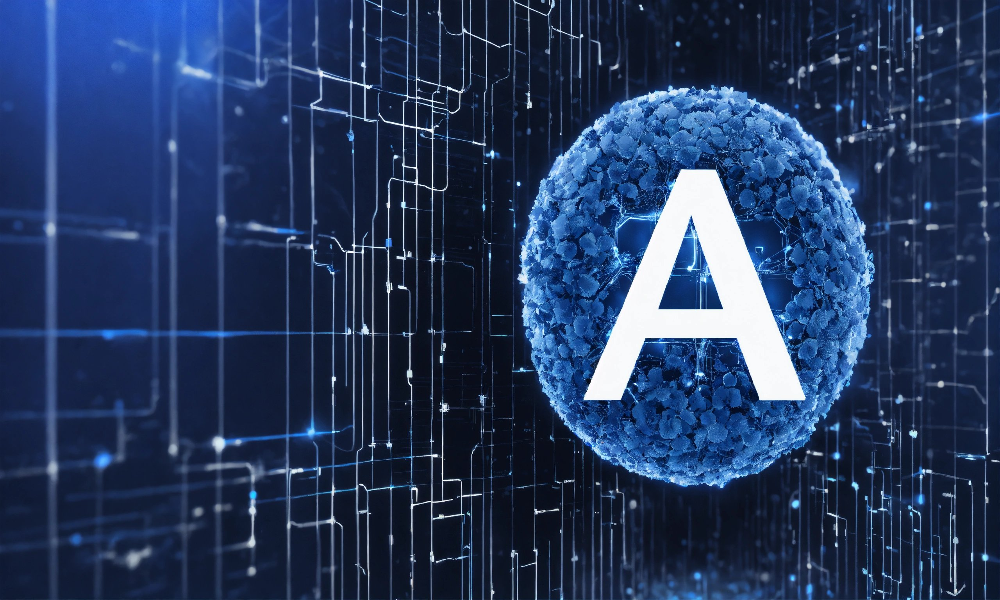

Inteligencia Artificial en Maestrías
La inteligencia artificial (IA) está revolucionando la educación superior, y las maestrías no son una excepción. La creciente demanda de profesionales con experiencia en IA ha llevado a un aumento en la oferta de programas de posgrado especializados en este campo emocionante y de rápido crecimiento.
Las maestrías en inteligencia artificial ofrecen a los estudiantes la oportunidad de explorar en profundidad los fundamentos teóricos y aplicados de la IA, así como de desarrollar habilidades prácticas en áreas como el aprendizaje automático, el procesamiento del lenguaje natural y la visión por computadora.
Una de las principales ventajas de estudiar una maestría en IA es la amplia gama de oportunidades profesionales que ofrece. Los graduados de estos programas están bien posicionados para ingresar a diversos campos, incluyendo la investigación académica, el desarrollo de productos, la consultoría empresarial y la innovación tecnológica.
Además de las oportunidades profesionales, las maestrías en IA también brindan la oportunidad de participar en proyectos de investigación emocionantes y de vanguardia. Los estudiantes pueden colaborar con profesores y expertos en la industria en proyectos que abordan desafíos importantes en áreas como la salud, la sostenibilidad y la justicia social.
Sin embargo, la integración de la IA en programas de maestría también plantea una serie de desafíos y consideraciones éticas. Es crucial abordar cuestiones relacionadas con la privacidad de los datos, la equidad algorítmica y el uso responsable de la tecnología para garantizar que los beneficios de la IA se distribuyan de manera justa y equitativa.
En resumen, las maestrías en inteligencia artificial ofrecen una oportunidad emocionante para explorar un campo en rápido crecimiento y contribuir al avance de la tecnología y la sociedad. Con un enfoque en la investigación, la práctica y la ética, estos programas están preparando a la próxima generación de líderes en IA.